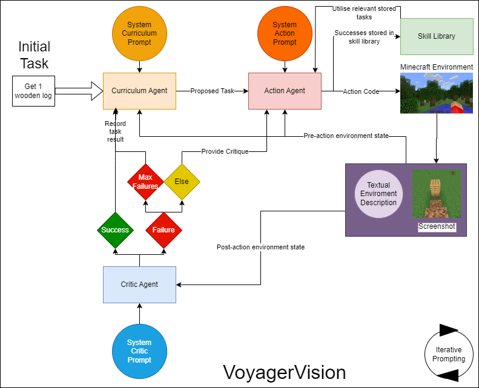

VoyagerVision System
The system operates within the environment of Minecraft, a 3-dimensional world
where the terrain and all structures are made out of ’blocks’, these blocks may
be broken provided the player possesses the correct tools. On collection, these
blocks may also be placed again, allowing the creation of structures and build-
ings. Within Minecraft, one of the two primary objectives of a player/agent is
to acquire resources to create better tools, which in turn, allows the collection
of more resources and even better tools. This process is the focus of the orig-
inal Voyager paper[13]. Another main focus is the creative process of creating
structures with the blocks the player gains while exploring - this often includes
practical structures such as a house or a nether portal (which allows further
exploration in a different world), and purely creative pursuits such as decorative
sculptures. As shown in Fig. 3, the agent has been provided with multimodal
inputs, enabling the pursuit of these building-focused tasks which are key to
the gameplay loop of Minecraft. The new prompts which have been used for
VoyagerVision, as well as the originals can be found in Appendices C to E.
The first curriculum task in the curriculum requires the agent to acquire 1
wooden log, which facilitates further building and resource gathering while being
a straightforward first step. On any other iteration, the curriculum agent uses its
system prompt, a screenshot of the agent’s current POV, a textual description
of the environment, and the history of previous successes and failures to decide
what task should be pursued next. The action agent uses this proposed task, the
system prompt, and the same environment inputs to generate code for the agent
to perform to solve the task, using the Mineflayer API [10]. At this point, the
action agent may refer to functions already stored in the skill library which are
helpful. The function generated by the action agent is then executed in the game
environment. Following this, the critic agent verifies the success of the task. For
resource gathering tasks, the textual environment information, such as nearby
blocks and what is currently in the agent’s inventory, is likely to be sufficient.
However, for building-based tasks, the agent’s POV is needed to verify if the
task has been truly completed. If the task was successful, it is reported as such,
the code is stored in the skill library, and the curriculum agent generates a new
task. Otherwise, the agent provides a critique to the action agent, which uses
this feedback to try generating the code again. If the agent fails the maximum
number of times (set to 3 in the default Voyager implementation), the task is
marked as failed, and this is added to the list of failed tasks. This information is
then used to assist the curriculum agent in generating a new task which is more
approachable for the agent.

Voyager System Overview
Unit Test Building Tasks
Below is an example image of each of the structures the agent was tasked with building as part of the unit tests. From left to right the structures get progressively more difficult to build. The agent being able to complete each of these tasks would demonstrate a strong ability to compose structures in a focused and isolated setting, a strong foundation for open-ended learning.
The prompts used to generate each task are outlined below:
-
Pole Task Prompt
Task: Create a wooden plank pole, 3 blocks high on the ground.
Context: N/A -
Wall Task Prompt
Task: Create a wooden wall 4 blocks high and 4 blocks long in a flat open space.
Context: N/A -
Stairs Task Prompt
Task: Create a wooden staircase 3 blocks high.
Context: The staircase should be composed of 3 adjacent pillars, one 3 blocks high, one 2 blocks high and one 1 block high, use wooden planks. -
Pyramid Task Prompt
Task: Create a three tier spruce plank pyramid.
Context: Begin with a 6x6 platform on the ground. On top of this platform, centred on its middle 4x4 blocks, add a 4x4 platform. Finally, on top of this 4x4 platform in its middle 2x2 blocks, add a 2x2 platform. -
Portal Task Prompt
Task: Create a nether portal.
Context: The portal should be made of obsidian, the sides should be 5 blocks tall with the base 4 blocks wide. Once you have completed the structure, light the inside with your flint and steel to form a nether portal. Ensure no dirt scaffolding remains inside the portal or else it will not light correctly.

Voyager System Overview
BibTeX
@article{park2021nerfies,
author = {Park, Keunhong and Sinha, Utkarsh and Barron, Jonathan T. and Bouaziz, Sofien and Goldman, Dan B and Seitz, Steven M. and Martin-Brualla, Ricardo},
title = {Nerfies: Deformable Neural Radiance Fields},
journal = {ICCV},
year = {2021},
}